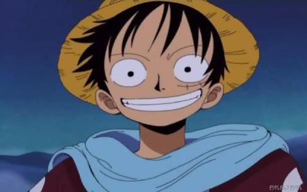

|  |
蒙奇·D·路飞蒙奇·D·路飞，日本漫画《航海王》及其衍生作品中的主角，外号“草帽”路飞，草帽一伙、 草帽大船团船长，极恶的世代之一。橡胶果实能力者的橡胶人，悬赏金15亿贝里。梦想是找到 传说中的One Piece，成为海贼王。 路飞性格积极乐观，爱憎分明，而且十分重视伙伴，不甘屈居于他人之下，对任何危险的 事物都超感兴趣。和其他传统的海贼所不同的是，他并不会为了追求财富而杀戮，而是享 受着身为海贼的冒险和自由。 |
蒙奇·D·路飞蒙奇·D·路飞，日本漫画《航海王》及其衍生作品中的主角，外号“草帽”路飞，草帽一伙、 草帽大船团船长，极恶的世代之一。橡胶果实能力者的橡胶人，悬赏金15亿贝里。梦想是找到 传说中的One Piece，成为海贼王。 路飞性格积极乐观，爱憎分明，而且十分重视伙伴，不甘屈居于他人之下，对任何危险的 事物都超感兴趣。和其他传统的海贼所不同的是，他并不会为了追求财富而杀戮，而是享 受着身为海贼的冒险和自由。 |
福州市闽侯县上街镇闽江学院 |
1090983403@qq.com |
400-123-4567 |